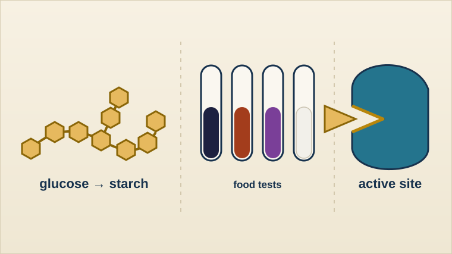

Year 10 Triple Biology
Biological molecules
Build carbohydrates, proteins and lipids from their units, test foods for them, and explain how enzymes, temperature and pH control reactions.

Lessons
Work through the unit in teaching order. Each lesson has its practical sheet, exam-style questions and reading in its Resources panel.